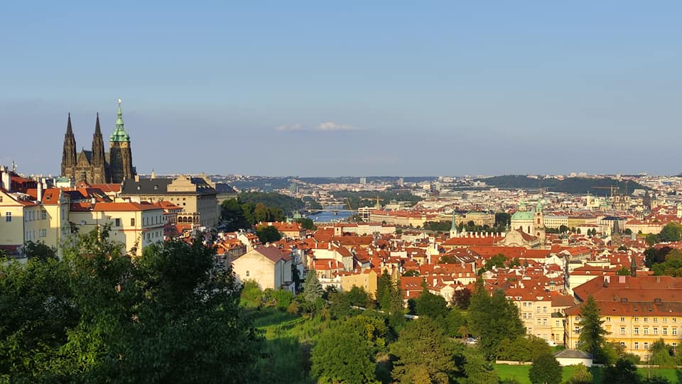

Welcome to my personal travel blog!
Embracing the Magic of Prague: A Journey Through Time and Beauty
Prague, the mesmerizing capital of the Czech Republic
Steeped in centuries of culture and tradition, this European gem offers a unique blend of old-world charm and modern allure. From its iconic historic landmarks to its vibrant arts scene, Prague has something to offer for everyone seeking an unforgettable travel experience.
The journey begins with a stroll through the cobbled streets of Prague's Old Town, where every corner reveals a new architectural marvel. The iconic Charles Bridge stands majestically over the Vltava River, connecting the Old Town with the picturesque Lesser Town. As the sun sets, the city's skyline comes alive, with the Prague Castle illuminated in all its glory, offering a breathtaking view that is nothing short of magical.
A visit to Prague would not be complete without exploring the majestic Prague Castle, the largest ancient castle complex in the world. This architectural masterpiece holds within its walls centuries of history, and a walk through its courtyards and gardens is like stepping back in time. The world-famous St. Vitus Cathedral, with its stunning stained glass windows and awe-inspiring Gothic architecture, is a sight that leaves visitors in awe.
For art enthusiasts, Prague offers a treasure trove of museums and galleries. The National Gallery houses an extensive collection of Czech and international art, from medieval times to the present day. The city's rich artistic heritage is also reflected in its vibrant street art scene, with colorful murals adorning walls throughout the city, adding a contemporary touch to its historic backdrop.
Prague's culinary scene is equally enticing, with an array of traditional Czech dishes and international cuisine to satisfy every palate. From hearty goulash and savory dumplings to delicate pastries and delicious craft beers, the city's gastronomic delights are a treat for the senses.
As the day turns to night, the magic of Prague truly comes to life. The city's lively nightlife offers a mix of traditional taverns, trendy bars, and live music venues, making it an ideal destination for night owls and music enthusiasts alike. Exploring the winding streets and hidden courtyards at night adds an element of mystery and romance to the experience, making it an unforgettable adventure.
In conclusion, Prague is a city that embraces its history while embracing the future. Its charm lies in its ability to enchant visitors with its timeless beauty and dynamic energy. From the medieval architecture to the vibrant arts scene, from the delicious cuisine to the bustling nightlife, Prague is a city that leaves a lasting impression on all who have the pleasure of exploring its magic. It is a destination that should be on every traveler's bucket list, promising an experience that is as unforgettable as it is enchanting.
Latest posts

Exploring the Serenity of Toronto Islands
In this post, I want to share my unforgettable experience on the Toronto Islands. Nestled just a short ferry ride away from downtown Toronto, these islands offer an escape from the hustle and bustle of the city.

Exploring sun-drenched Barcelona
Barcelona, the vibrant and culturally rich city, had always been on my travel bucket list. The allure of its stunning architecture, golden beaches, and lively atmosphere was simply irresistible. Finally, the day arrived when I embarked on a journey to the wonderful city of Barcelona, Spain.
Embracing the Magic of Prague: A Journey Through Time and Beauty
Embark on a journey of wonder and enchantment as we delve into the captivating story of my unforgettable trip to Prague. Nestled amidst the heart of Europe, Prague, with its timeless beauty, historical splendor, and rich cultural heritage, promised an adventure like no other.